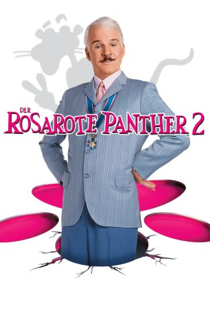

#9327 Der Rosarote Panther 2
Alternativ: The Pink Panther 2
 
 IMDB-Wertung: 5.6 / 10
IMDB-Wertung: 5.6 / 10  Metascore: 0
Metascore: 0 
Inspektor Clouseau verteilt Strafzettel in Paris, damit er keinen Schaden mehr anrichten kann. Dann aber wird der Diamant "der rosarote Panther" von einem dreisten Dieb erneut gestohlen. Und schon findet sich der Trottel in dem internationalen Experten-Team von Chefinspektor Dreyfus wieder, um die Kostbarkeit aufzuspüren. In Rom und Paris zeigt Clouseau, dass er den weltbesten Spürnasen durchaus ebenbürtig ist.
Jahr: 2009
Dauer: 92 Minuten
FSK: 6
Land: USA Studio: Columbia PicturesTonspuren: DTS - ,
Untertitel: Deutsch,
Auflösung: 1080p (1920x1040) Größe: 7362 MB
Genre: Komödie, Abenteuer, Krimi, Familie, Mystery
Regisseur: Harald Zwart
Drehbuch: Scott Neustadter
Soundtrack: Christophe Beck
Darsteller:
Datei: X:\7+mehr(A-Z)\Rosarote Panther\Rosarote Panther 2, Der (2009, FSK6, 1920x1040).mkv seit 27.07.2018
Festplatte: HD Collection-7+mehr(A-Z)+Person
 Es gibt insgesamt 13 Filme in der Gruppe '7+mehr(A-Z)\Rosarote Panther'
Es gibt insgesamt 13 Filme in der Gruppe '7+mehr(A-Z)\Rosarote Panther'